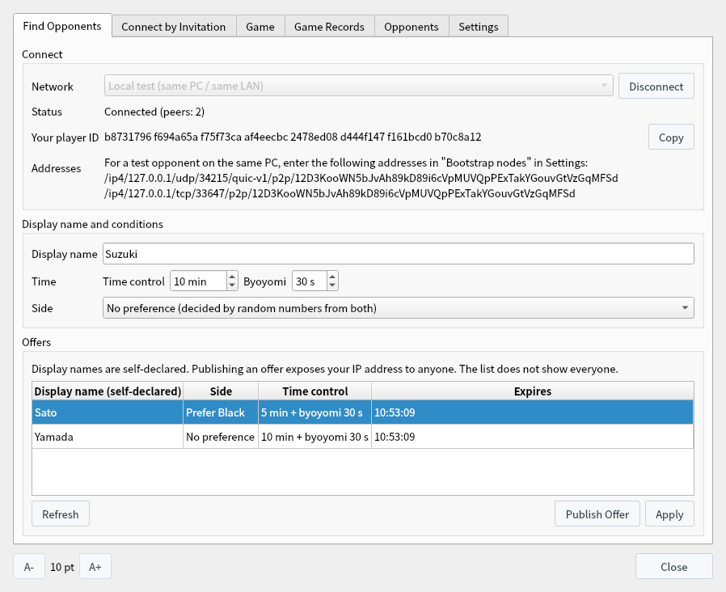

P2P Games (Experimental)
Connect directly to your opponent without a game server, and keep a game record that both players signed at the start and the end
This is an experimental feature; screens and rules may change. Screenshots were captured on Linux with the English interface.
What Are P2P Games?
An experimental way to play that is available only in the ShogiBoardQ P2P experimental build
In a P2P game, your app and your opponent's app connect directly instead of going through a game server as in CSA network play (relays are used when a direct connection is not possible). You either send an invitation to your opponent or find one in the public list of offers.
Both players sign the start and the result of each game with a player key that this app creates. The public key of the player key is your player ID. No real name or external account is used. When the game ends, a game record (evidence) signed by both players is saved on both PCs, and anyone can verify it.
P2P games are part of a separate app, ShogiBoardQ P2P Experimental (ShogiBoardQ-P2P). Its settings and records are kept apart from the regular ShogiBoardQ. To build it from source, pass -DENABLE_P2P_PLAY=ON to CMake (libsodium and Rust are required; see Linux Build and Release for the build steps).
- Operating system: Linux only for now. P2P games are not available where the OS cannot restrict the communication process (shogiboardq-peer).
- Networks: Local test (same PC / same LAN) and Limited test. To join the limited test, enter the addresses of cooperating nodes in Bootstrap nodes in Settings.
- Expiry: 180 days after the build date, the build no longer joins the limited test network. The local test network and reviewing or verifying saved records keep working.
- Automation API: P2P games are not available when the app is started with
--automation.
| Item | Rule |
|---|---|
| Handicap and players | Even games only, between humans. Consideration, mate search, game analysis, and the opening book display are unavailable during a game. |
| Time control | Main time (minutes) and byoyomi (seconds). Each player reports their own time, which is checked against the time the opponent measured. |
| Sides | Assigned by the players' preferences when they match; with No preference, decided by random numbers from both players. |
| Game end | Resignation, checkmate, time loss, repetition (draw), perpetual check (the checking side loses), 512 moves reached (draw), draw by agreement, and abort by agreement. |
| Not available | Takebacks and entering-king declarations (an entering-king game can end in a draw by agreement). |
Getting Ready
Open the P2P window, create a player key, and connect to a network
Choose P2P Game (Experimental)… from the Game menu in the menu bar to open the P2P window. You can keep using the board and the game record while the window is open.

Game menu: P2P Game (Experimental)… opens the window
On the Find Opponents tab, choose a Network and click Connect. The first time, Prepare P2P Games opens. Read the list of what cannot be prevented, choose how to store the key, and click Create Player Key.
- OS keychain (recommended): Stores the key in the OS keychain (KWallet, GNOME Keyring, and so on). Not available in builds without QtKeychain.
- File encrypted with a passphrase: Stores the key in a file encrypted with a key derived from your passphrase. You are asked for the passphrase the first time you connect after starting the app.
- Unencrypted file: Anyone who can read or copy the files on this PC can play while impersonating you.
The key files are kept in ~/.local/share/ShogiBoardQ-P2P/p2p/identity.

Prepare P2P Games, shown the first time you connect
Once connected, Status shows Connected (peers: N) and Your player ID appears. Enter the name your opponents will see in Display name. It must be 1 to 32 characters with no leading or trailing spaces, using letters, digits, symbols, kana, kanji, and full-width alphanumerics.
Time control, Byoyomi, and Side become the conditions of your invitations and offers. To try the local test with another app on the same PC, enter the addresses shown under Addresses into Bootstrap nodes in the other app's Settings.
Playing by Invitation
To play someone you know, send an invitation only to that person
On the Connect by Invitation tab, click Create Invitation. Click Copy and send the invitation by a channel that reaches only your opponent, such as a private message. The invitation contains your addresses (IP addresses), so do not post it in public.
An invitation expires after 10 minutes and can be used only once. It uses the time control and side on the Find Opponents tab.
Paste the invitation into the Connect by invitation box and click Check Invitation. The inviter's PeerId, the expiry, and the number of addresses appear. Check them and click Connect. Connecting does not start the game yet; you start after checking your opponent on the confirmation screen that opens next.
An invitation from someone on the same LAN may contain private addresses. To connect to them, check Allow connecting to the private addresses above (opponent on the same LAN).

Connect by Invitation tab: create an invitation (top) and connect with one you received (bottom)
Finding an Opponent from Offers
Pick an opponent from the offers on the same network, or publish your own offer
Once connected, Offers lists the players who are offering a game on the same network. Click Refresh to reload it. Check the display name, side, time control, and expiry, select an offer, and click Apply. You cannot apply to an offer whose side preference conflicts with yours.
Display names are self-declared. The list shows only the offers that were found, not everyone.


Find Opponents tab: connected, with offers in the list
Click Publish Offer to offer a game with the display name, time control, and side under Display name and conditions. An offer expires after 2 minutes and is renewed every 30 seconds while it is published. Click Withdraw Offer to stop. When someone applies, the confirmation screen opens.
Publishing an offer exposes your IP address to anyone. If you do not want that, play by invitation or use Do not use direct connections in Settings (relay operators can still see it).
The Confirmation Screen
Check your opponent and the conditions before the game starts
When you connect by invitation, or apply to an offer or receive an application, Confirm P2P Game Conditions opens for both players. Opponent shows the opponent's display name (self-declared) and the full player ID. Use the player ID, not the display name, to tell whether it is the same person.
| Message | Meaning |
|---|---|
| The opponent's signature has not been verified yet. This ID is only what the opponent claims. | The start procedure is still in progress. The player ID is only what the opponent has claimed. |
| The opponent's start signature has been verified. The opponent holds the key of this ID. | The opponent signed the start with the key of this ID. |
| Verified opponent (checked with the verification code). | You marked this opponent as verified on the Opponents tab. Your local name for them is also shown. |
| First game with this opponent. / Games with this opponent: N | How many games you have played with them, and how many of those had no confirmed result. |
| Same display name as the opponent you named "…", but a different player ID. | Shown in red. This may be someone other than the opponent you named. |
Game conditions and record shows the sides and how they were decided, the time control, the rules, and what the game record keeps. If everything is fine, click Start. The game begins when both players have clicked Start. Clicking Cancel, or not starting within 60 seconds, cancels it (the seconds left are shown at the bottom).

Confirmation screen (before the opponent's signature is verified)
During the Game
Move on the main window's board, and resign or make offers on the Game tab
When the game starts, the board, game record, and clocks of the main window are used. Game Info shows both display names and the game ID. When you play White, the board flips automatically so that you see it from your side.
Your move is placed on the board after your opponent's app has received and checked it (Waiting for move confirmation… is shown meanwhile). There are no takebacks.

Main window during a game (after move 14)
The Game tab shows the opponent, your side, the route (direct or relay), whose turn it is, and the disconnection time left.
- Resign: Available on your turn.
- Offer Draw / Offer Abort: Asks your opponent whether to accept. Only if they accept does the game end in a draw or abort by agreement. If they decline, the game continues.
- Leave Game (result unconfirmed): Leaves the game unilaterally. The result is not confirmed, and your opponent is told the game was interrupted.

Game tab
If the connection drops, the app reconnects automatically (Reconnecting (N s left) is shown). The clock of the side to move keeps running, and the side to move can still make one move, which is sent when the connection returns.
If the connection cannot be restored within 120 seconds, the game ends as Communication lost (unconfirmed). It is also interrupted when the total disconnection time in one game exceeds 10 minutes. A failure on your own line cannot be told apart from a deliberate disconnection, so a disconnection is not treated as a loss for the opponent.
If the app or the communication process exits, or the PC goes to sleep, the game cannot be resumed (the result is unconfirmed).
Game Records and Verification
The record (evidence) of each finished game stays on both PCs, and anyone can verify it
Finished games are listed on the Game Records tab. How it ended is how the game ended in your app; Record status is the result of verifying the evidence.
| Record status | Meaning |
|---|---|
| Signed by both | Both player keys signed the same result. This is the only status that shows that both players agreed on the result. |
| Determined by the moves | The result was not signed by both, but the moves up to the last position signed by both players determine checkmate, repetition, perpetual check, or 512 moves reached. |
| Unconfirmed | Neither of the above, for example when the opponent's signature did not arrive after a resignation or time loss, or when the game was interrupted. |
Evidence is saved in ~/.local/share/ShogiBoardQ-P2P/p2p/evidence. If the app exits during a game, the record up to that point appears as an unconfirmed record the next time you open the window.

Game Records tab: a record signed by both players
Click Verify to see whether the signatures match, whether the moves follow the rules, whether the self-reported time arithmetic matches, whether the result is determined by the moves, and the record status. Export Evidence… saves the evidence file (.sbqmatch) wherever you like. Delete Record removes the evidence from your PC (this cannot be undone).
A record does not prove the actual thinking time, that humans played, or when the game was played.
You can also verify an evidence file without starting the GUI by using verify-match of shogiboardq-cli. The result is JSON (the example below is formatted and long IDs are shortened).
$ shogiboardq-cli verify-match --input-path ~/game.sbqmatch
{
"black_player_id": "4b8788e2…",
"byoyomi_ms": 30000,
"category": "mutually_signed",
"checks": {
"clock_arithmetic": true,
"conditions_match": true,
"record_legal": true,
"result_conflicts_with_record": false,
"result_refers_to_record": true,
"signatures": true,
"start_signatures": true
},
"game_id": "c62a566e…",
"last_confirmed_ply": 15,
"main_time_ms": 600000,
"network": "sbq-local-1",
"network_id": "83cc9dfd…",
"not_verifiable": [
"actual_thinking_time",
"human_play",
"date_played"
],
"ok": true,
"result": {
"black_signed": true,
"cause": "resign",
"outcome": "black_wins",
"ply": 15,
"result_digest": "a6cec2cd…",
"white_signed": true
},
"states": 16,
"valid": true,
"white_player_id": "8a3569db…"
}valid is true when the signatures and the record structure are correct, and category is the record status (mutually_signed, determined_by_record, or unconfirmed). not_verifiable lists what this record cannot show (actual thinking time, human play, and the date played).
Opponents and Settings
Name the opponents you have played and check with a verification code that they are the same person
Opponents you have played are listed on the Opponents tab by player ID. Anyone can use the same display name, so use the player ID to tell whether it is the same person.
- Name…: A local name for the opponent. It is not shown to the opponent or written into game records; it appears on the confirmation screen and in Game Records.
- Verification Code…: A 30-digit number made from both player IDs. Both players see the same number, so compare it through another channel such as a phone call or in person, and click Mark Verified if it matches.
- Block: Refuses applications and connections from that opponent. They are told you are busy negotiating or playing with someone else.
- Delete Record: Removes the opponent's name, verified mark, block, and game count.
Anyone can create a new player key for free, so a block or past results can be avoided by recreating the key.

Opponents tab: an opponent with a local name, verified with the verification code
- Bootstrap nodes: Addresses of cooperating nodes (/ip4/…/p2p/…), one per line.
- Do not use direct connections: Uses relays only and hides your IP address from opponents. Relay operators can still see it.
- Hide display names of opponents you have not played: Shows Name hidden instead of the display names of new opponents in Offers, on the confirmation screen, and in Game Records.
- Recreate Player Key…: Changes your player ID, so opponents see you as someone else. The old key is deleted.
Below them are how the player key is stored, the restrictions placed on the communication process (Landlock, seccomp, and so on), and the expiry of this build.

Settings tab
What Cannot Be Prevented and What Others See
Please read this before using the experimental P2P games
- Display names: Display names are self-declared. Identify opponents by player ID and verification code.
- Signing the result: If the losing player refuses to sign the result, no record signed by both players remains.
- Time used: Time used is self-reported. Padding of up to 10 seconds per move and stalling by disconnecting (up to 10 minutes in total per game) cannot be detected.
- Engines and arranged games: Games played by engines and arranged games cannot be detected. Both players can also agree to sign a made-up result.
- Player key: Malicious programs running as the same user can steal the player key.
Do not use recorded wins as the basis for an official rating or playing strength.
| Who | What they can see |
|---|---|
| Your opponent | Your IP address (with a direct connection), player ID, display name, and conditions |
| Anyone viewing offers | The IP address, display name, and conditions of whoever published the offer. Pretending to apply also reveals the player ID |
| Anyone who receives the game record (evidence) | Both player IDs, the conditions, all moves with self-reported time, and the result with both signatures. Display names, IP addresses, and local names are not kept |
The app never publishes your game records or sends them anywhere.